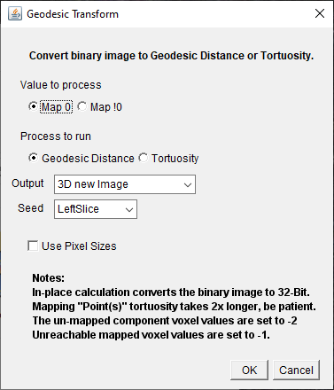
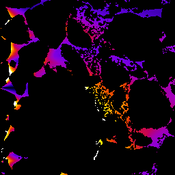
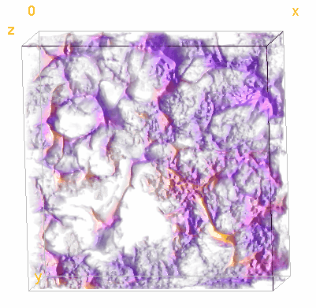
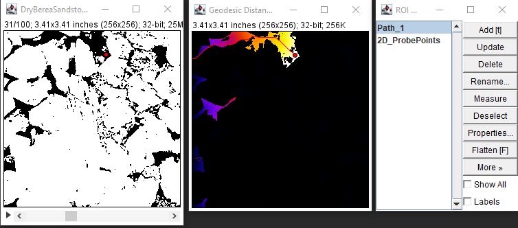
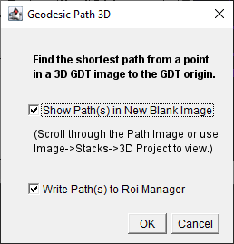

Geodesic Transform creates 2D and 3D geodesic distance maps by ordered propagation. See the Flood_Tools_Lib page for more information.

Geodesic Map Dialog
Geodesic Distance operates on 2D and 3D images that have been "binarized" into "zero" and "non-zero" components.
Select "Map 0" or "Map !0" to select the component to map.
The "Output" pull down menu provides several options:
3D new Image - creates a 3D GDT new output stack.
3D in Place - converts the current stack to a 32-bit 3D GDT
2D new Image - creates a new stack of 32-bit 2D GDTs
2D in Place - converts the current stack to a new stack of 32-bit 2D GDTs
2D this slice new image - creates a 2D GDT of the current slice
Check the "Use Pixel Sizes" to map in physical pixel size units. The default is unit pixels.
The "Seed" pull down menu provides several options for the source points:
Left Slice - the GDT seed points are the entire left side of the 3D volume
Right Slice -
Top Slice -
Bottom Slice -
Front Slice -
Back Slice -
Point(s) - Use the ImageJ Roi Point tool to define one or more GDT source points.
Select Geodesic Distance or Tortuosity radio button.
For tortuosity from a volume surface, the tortuosity is the GDT distance from the surface divided by the straight line distance from the surface.
For tortuosity from Point(s) sources,the tortuosity is the GDT distance from the nearest source point divided by the straight line distance from the nearest source point.
Note that the tortuosity using the "Point(s)" option is relatively slow.
Click OK to begin processing.
Binarized Image(left), Geodesic Map Dialog(center), resulting GDT from left slice(right)

Tortuosity from left volume face 1(dark blue) to 1.75(white)

Tortuosity Visualization made with Volume Viewer 2.01
Geodesic Path 2D
There is no user dialog for Geodesic Path 2D. It operates on 2D GDT images made with the Geodesic Transform plugin.
Select a "binarized" image or stack slice.
Run the Geodesic Transform plugin with one of the 2D options.
Select one or more points in one or more 2D GDT images.
Run Geodesic Path 2D from the plugins menu.
The shortest path from the selected points to the nearest "0" in the GDT will be added to the ROI Manager.

Slice 31 in a binarised Stack with point selection(left), Image after Geodesic Path 2D(center),Roi Manager(right)
Geodesic Path 3D
Geodesic Path 3D operates on 3D GDT images made with the Geodesic Transform plugin.
Select a "binarized" image or stack slice.
Run the Geodesic Transform plugin with one of the 3D options.
Select one or more points in one or more 3D GDT images.
Run Geodesic Path 3D from the plugins menu.

Geodesic Path 3D Dialog
The shortest path from the selected points to the nearest "0" in the 3D GDT will be drawn as points.
Show Path(s) option creates an new image with the path voxels set to 100 plus the point selection index.
Write Path(s) to Roi Manager adds the path points an names each path.
Get GDT Path Points
There is no user dialog for Get GDT Path Points.
Run a 2D or 3D geodesic path plugin on a GDT image. The 2D and 3D path plugins only operate on 2D and 3D GDT images respectively.The path point ROIs appear in the ROI manager.
The resulting paths can be applied to any image.
For example, starting with a 3D image of a pore network containing a varying concentration of a substance.
Segment the pore network.
Compute the GDT of the network from some source point(s) or volume surface.
Select test points in the GDT mapped pore network.
Run the shortest path plugin to obtain the shortest paths from the test points through the network to the source point(s) or surface.
Apply a path from the ROI manager to the original image.
Run "Get GDT Path Points" to get the substance concentration along that path.
Similarly, the distances along the path can be obtained by applying the ROI manager path to the pore network GDT image. The concentration can then be plotted as a function of distance. At this writing, the ImageJ Plot tools are not well suited for combining data in this way. Copy the two sets of path data to a spreadsheet application.